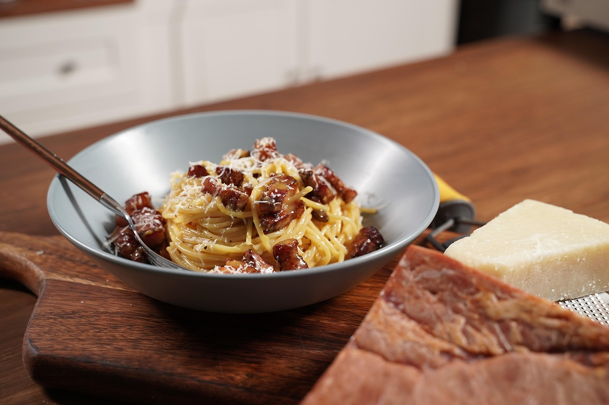

Carbonara is a Roman dish made with eggs, hard cheese, and cured pork. Its signature rich and silky sauce comes from beaten eggs tossed with hot pasta.
The trick to making carbonara is making sure the pasta is hot enough to cook the eggs, but not so hot that they curdle.